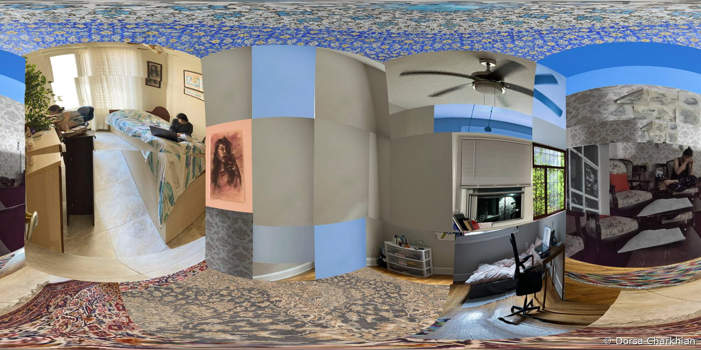
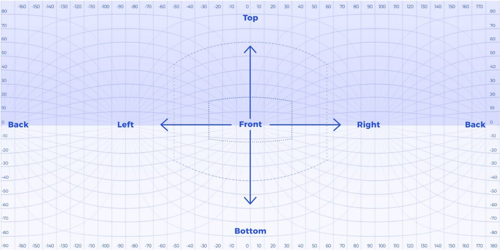
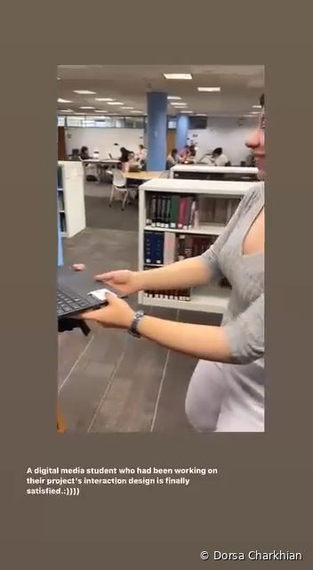
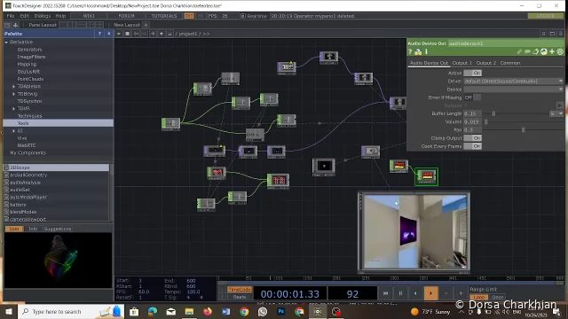
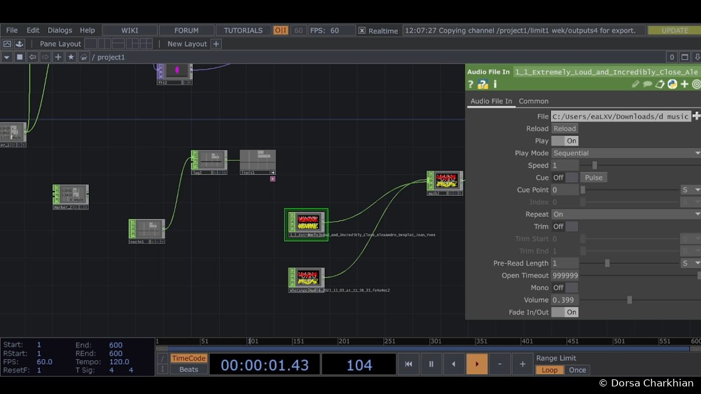

Design practice · Interactive sensing
TIME
A panoramic, interactive journey through the homes I have lived in, navigated with the body.
Overview
TIME is an interactive experience built in TouchDesigner. It brings together significant periods of my life through an immersive panoramic view of my living spaces in Tabriz, Hamedan and Philadelphia. A webcam reads the viewer’s head, and turning it moves them through these rooms, rebuilt as one 360° space. The work blends personal heritage with technology, so viewers can move through different phases of a life in their own way.

Why this project
I wanted to document and share personal experience through a new, interactive medium: an environment where viewers could explore the emotional and spatial qualities tied to different periods of a life, rather than only look at photographs of them.
Research and testing
- Analyzed storytelling techniques for interactive media
- Ran user tests to refine navigation and the interaction
- Iterated on the head-tracking controls based on feedback


Build
I captured real images of each space, combined them into a single panorama, and designed interactions that let viewers navigate with head movements through a webcam. Making real photographs navigable as one seamless space took careful detail work and repeated testing.

Music
I composed a dynamic soundtrack, also driven in TouchDesigner. As viewers move through the panorama, the music shifts in tone and intensity, giving auditory feedback that follows the visual journey and lets people feel the passage of time between the rooms.

Video
What stayed with me
In TIME the body becomes the interface. That idea, sensing a person to let a system respond to them, runs through my research on how technology can adapt to people rather than the other way around.